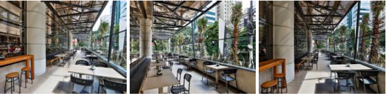
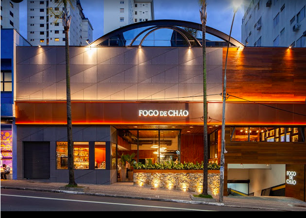
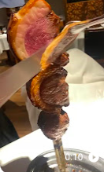
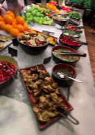
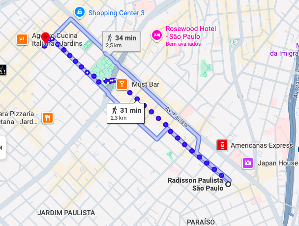

Social Events Venue
Welcome Reception - Cocktail (October 22nd)
La Terrase (conference venue https://www.letsatlantica.com.br/hotel/radisson-paulista)
The cocktail will happen at La Terrase, which is located in the conference venue.

(picture from official website)
Banquet (October 23rd)
Banquet at Churrascaria Fogo de Chão Jardins (https://fogodechao.com.br/location/jardins/)
with a traditional Brazilian barbecue
Rua Augusta 2077, Cerqueira César, São Paulo, Brazil
ACCESS:
a 30-minute walk from Radisson Hotel Paulista
(2.3 km from the conference venue)

(picture from official website)

(picture from official website)
